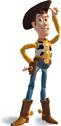
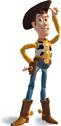

![[LinuxFocus Image]](../../common/May1998/border-short.jpg)
| Noticias Archivos Compañias Consejos y Trucos |
RenderManPor Carlos Calzada Grau |
Introducción
Instalación
Primeros Pasos
Conclusiones
Introducción¿ Quien no ha oído hablar de Pixar?, ¿ Quien no ha visto Toy Story?. Pixar Animation Studios se dedica desde hace mucho tiempo a la animación por ordenador. Luxo Jr. (1986) fue la primera película en 3D realizada por ordenador nominada al Oscar, además ganó más de 20 premios en festivales de cine internacionales.
En 1987, Red's Dream ganó varios premios en el Festival Mundial de Animación en Zagreb y en el Festival Internacional de Cine de San Francisco. La primera animación que ganó un Oscar fue Tin Toy (1988), Pixar realizó un modelo para la cara de un bebé definiendo más de 40 músculos que controlaba el animador.
En 1989 sacaron Knick Knack, es la historia de un muñeco de nieve que vive en una bola. La película se realizó inicialmente para verla en 3D aunque también sacaron una versión normal. Después de esto vendrían muchos más exitos como la reciente película Toy Story. Este es uno de los primeros largometrajes realizados íntegramente por ordenador. En la página de Pixar podéis encontrar más cosas interesantes, como Toy Story 2 que esperan sacarla en 1999. Pixar desarrolló el interface RenderMan para separar y mantener independientes los "modeladores" y los "renderizadores". Un modelador es una herramienta que se usa para dibujar escenas, diseñar animaciones etc., mientras que un renderizador lo único que hace es coger esa descripción y representarla con sombras, luces, texturas, etc. RenderMan permite a los modeladores especificar que es lo que hay que renderizar pero no cómo hacerlo, es decir, un modelador no debería preocuparse en absoluto del rendering. Del mismo modo, un renderizador que cumpla las especificaciones del estandar RenderMan puede usar Z-buffer, scan-line, ray-tracing, radiosity o cualquier otro método para "dibujar" los objetos, y esto es independiente de RenderMan. Podemos ver el interface RenderMan como un formato de descripción de escenas del mismo modo que PostScript es un formato de descripción de páginas. Este standard es independiente de arquitecturas y de sistemas operativos.  


Copyright 1988, 1989, Pixar. All Rights Reserved. RenderMan@ is a registered trademark of Pixar En este artículo trataremos de introducirnos un poco en RenderMan, para ello usaremos Blue Moon Rendering Tools, escrito íntegramente por Larry Gritz. Este paquete es un renderizador de libre distribución (sólo ejecutables y para uso personal), existen versiones para muchas máquinas entre las que se encuntra Linux (de hecho fue una de las primeras implementaciones), utiliza ray-tracing y radiosity y no tiene nada que envidiar a Photorealistic RenderMan (PRMan) el producto comercial de Pixar. En un principio el sistema de coordenadas del mundo y el de la cámara coinciden, son sistemas de coordenadas levógiros (exactamente igual que el del Pov-Ray), con el origen en el centro de la pantalla, el eje X hacia la derecha, el Y hacia arriba y el Z hacia "dentro" de la pantalla. En la siguiente figura podemos ver la cámara que se usa por defecto (el eje X es rojo, el Y verde y el Z azul, para ver el código fuente pincha en la imagen). Un sistema dextrógiro es igual pero con el eje Z cambiado de signo.
En Pov-Ray, el sistema de coordenadas del mundo es fijo, es decir, podemos mover la cámara por el mundo y poner los objetos mediate transformaciones, en RenderMan, ocurre justo lo contrario, la cámara es fija y lo que se transforma para obtener distintos puntos de vista es el sistema de coordenadas del mundo. Todo esto lo veremos más adelante cuando "desmiguemos" un ejemplo. RenderMan contempla muchísimas primitivas, tanto de definición de objetos como de luces y demás. A continuación veremos, como ejemplo, el formato de las cuádricas que son las más famosas, aunque existen más (como parches bezier, polígonos, etc.).
Podemos observar que el formato de algunas de estas primitivas no es demasiado sencillo, pero teniendo en cuenta que el fichero RIB lo debe proporcionar un modelador como salida, este formato es el más adecuado, tanto por sencillez como por potencia. InstalaciónAntes de nada debemos ir a la página de Blue Moon Rendering Tools y bajarnos el programa. En estos momentos la versión más reciente es la 2.3.6 y para descomprimirlo se procede de la forma normal:rabit:~/$ gzip -d BMRT2.3.6.linux.tar.gz rabit:~/$ tar xvf BMRT2.3.6.linux.tar Una vez descomprimido y desempaquetado nos creará un directorio llamado BMRT2.3.6, en él tenemos los ejecutables (en bin/), los ejemplos (en examples/) y la documentación en postcript y HTML (en doc/), también hay un README en el que, además de información útil sobre el programa y demás, hay un apartado de instalación. Es muy sencillo y no debería dar problemas a nadie. Primeros PasosPara familiarizarnos con la especificación, veremos un fichero típico Renderman (../../common/May1998/disptest.rib). La imagen se genera con rendrib -v ../../common/May1998/disptest.rib (pinchando en la imagen la veremos a 1024x768 y con anti-aliasing 2x2).Este es uno de los muchos ejemplos que encontraréis en el directorio examples/ de BMRT (Blue Moon Rendering Tools) y como podéis ver el fichero que lo produce no es muy largo (cuando hagamos animaciones veremos como el fichero crece de forma considerable).
Cómo habréis podido observar, en el directorio bin/ hay varios ejecutables: rendrib, rendribv y rgl. Rendrib es el renderizador con todas las de la ley, rendribv es igual, pero renderiza en modo wire-frame, es decir, con líneas, por último, rgl renderiza en modo polígonos. Estos últimos renderizadores son para hacer previews de posiciones, animaciones etc., el rendering final debemos hacerlo con rendrib. El formato de los ficheros RIB (Renderman Interface ByteStream) es bastante sencillo, aunque no por ello menos potente, y son ficheros de texto plano (igualito, igualito que Pov-Ray). Un fichero RIB correcto contiene lo siguiente:
Para comprender mejor todo esto y para introducirnos un poco en la
manera de especificar escenas con RenderMan, vamos a ver el ejemplo
anterior línea por línea. Con esto nos haremos una idea
de lo que se puede hacer y de cómo hacerlo.
Como podemos ver en la línea 1 y de la línea 4 a la 12, el símbolo # se usa para los comentarios, pueden estar en cualquier lugar del fichero y ocupan una linea (como los comentarios de C++ //). Los comentarios los usaremos más que nada cuando editemos estos ficheros a mano ya que ayudan bastante a comprender el funcionamiento de la escena. En la línea 2 está la directiva version. Nos dice qué versión del interface se está usando (la 3.03), la versión más actual es la 3.1 de septiembre de 1989 (si, de 1989, no me he equivocado), aunque tiene revisiones de Mayo del 95. La linea 14 define con la directiva searchpath y shader el path de los "sombreadores", los sombreadores le dicen al renderizador de qué forma un objeto debe renderizarse (como plástico, transparente, etc.), esta es una de las cosas que hacen potente al interface, ya que las texturas de los objetos son una especie de Plug-Ins, por tanto podemos implementar nuevas texturas, efectos etc. sin tener que esperar a una versión más potente del renderizador. Normalmente existe una variable de entorno (SHADER) que indica donde están estos ficheros, por lo que no se suele declarar en el fichero. La opción Display está en la línea 15, con ella declaramos el nombre del fichero de salida "balls2.tiff" y su tipo "file" "rgb", es decir, de tipo fichero RGB. En la línea 16, con la opción Display, definimos la resolución del rendering, es decir, el tamaño de la imagen, que en este caso será de 400x300 el -1 define el aspect ratio del ancho y alto del pixel (en realidad debería ser un +1, no sé por qué ponen -1) A continuación tenemos el sampleado horizontal y vertical de cada pixel, es decir, el número de rayos que se lanzarán para renderizar un pixel, con PixelSamples 2 2 tendremos que por cada pixel lanzaremos 4 rayos, lo que se traduce en una mejor calidad de la imagen (esto es el anti-aliasing), pero por contra un mayor tiempo de renderización, en nuestro caso tendremos únicamente un rayo por pixel (1x1=1). La línea 19 es una declaración y en ella simplemente decimos que prmanspecular en un integer, en realidad lo que hacemos es definir el token prmanspecular y cuando el renderizador se encuentre con este token, lo siguiente será un entero.
Las siguientes líneas, 22 y 23, definen la posición de la cámara. Primero tenemos una traslación y luego una rotación, pero debido a que todas las transformaciones se realizan introduciéndolas primero en la pila y calculando al final (cuando encuentra el WorldBegin en este caso), las transformaciones se "ejecutan" al revés, es decir, primero se realiza la rotación de -110 grados en el eje X (para hacerla en el eje Y se haría Rotate 45 0 1 0), y a continuación la traslación de -0.55 unidades en el eje Y y 8 en el eje Z. Hay que tener en cuenta que lo que se gira y traslada no es la cámara, es el origen de coordenadas del mundo. En las siguientes figuras podéis ver las dos transformaciones, el estado inicial, la rotación y luego la traslación.
En este punto empieza la escena en sí. Una escena (declaración de las luces, de los objetos, etc.) empieza siempre con WorldBegin y acaba con WorldEnd (líneas 26 y 64 respectivamente). Seguidamente tenemos la declaración de las luces (líneas 28 a 32), la primera es luz ambiente, es la número uno (cada luz debe tener un número, y en teoría deben ser distintos) y tiene 0.02 de intensidad luminosa. A continuación vemos que se declara shadows como una cadena de caracteres (string) y activamos la opción de las luces para que hagan sombra. La siguiente línea es una luz de tipo distantlight (como la del sol por ejemplo) con el número uno aunque debería ser otro (por ejemplo el dos) esto funciona debido a que BMRT parece que ignora estos números, pero para guardar la compatibilidad (por ejemplo con PRMan de Pixar) debemos ser estrictos con el interface. La intensidad se declara igual que en la otra luz(son atributos comunes) y el vector dirección de la luz con from y to, esta luz lanza rayos paralelos, es como si estuviera en el infinito. A partir de aquí tenemos los tres objetos que forman la escena, cada objeto está encerrado en un par AttributeBegin, AttributeEnd, ya que cada uno tiene sus propias características, tanto de posición como de apariencia, si lo único que cambiaramos de un objeto a otro fuera su posición, podríamos declarar la textura fuera y a continuación definir los objetos con TransformBegin y TransformEnd. El primer objeto (lineas 34 a 42) es un parche, los parches pueden ser: uniformes o no-uniformes, racionales o no-racionales y bilineares o bicúbicos, con esto se consiguen parches Bezier, BSplines etc. (un libro sobre gráficos por ordenador ayudaría bastante a comprender esto). En este caso tenemos un parche bilinear con cuatro puntos, estos se definen con "P" y luego se ponen las coordenadas (x,y,z) de los puntos que queramos. La textura del objeto se consigue con la directiva Surface, el primer argumento es un fichero shader, las siguientes son específicas de cada shader. En la imagen siguiente tenemos como queda la escena al añadir este cuadrado. El siguiente objeto va de la línea 44 a la 52, se trata de una esfera (línea 51) y el color se lo proporcionamos con la directiva Color [R G B]. A continuación la ponemos en el sitio con Translate y le decimos que clase de superficie tiene, en este caso matte que no tiene más parámetros. Después tenemos la característica más importante de BMRT, los shaders de desplazamiento. Estos shaders son como los bump-maps de Pov-Ray, con la diferencia que los "bultos" no son simulados, son reales. Con esto conseguimos que una esfera con bump-mapping no se vea redonda por los bordes y se vea abollada. Los shaders de desplazamiento son iguales que los de textura, un nombre de shader y sus parámetros. El formato de especificación de esferas es un poco raro: el primer parámetro es el radio, el segundo y el tercero son zmin y zmax respectivamente y recortan la esfera por esos valores (zmin=-1 y zmax=1 la dejan entera, zmin=0 y zmax=1 la parten por la mitad), el último valor son los grados que cubre la esfera, 360 toda, 180 la mitad etc. La imagen siguiente es la escena con la primera bola: El siguiente objeto es igual que el primero pero con otras características de textura y desplazamiento, por lo que no seremos pesados y lo dejaremos correr. Como antes, veremos como queda la escena en la imagen siguiente:
Con esto se acaba el fichero. Como podéis ver el desarrollo de escenas no es muy complejo, pero con una escena complicada o con una animación el fichero se complica bastante. Para evitarlo basta usar un modelador que soporte RenderMan (cualquier modelador que se precie debería exportar RIB's) o programar la animación en C. Con la distribución de BMRT vienen los includes y las librerias necesarias. Son simplemente funciones que sacan por la salida estandard el fichero RIB. La correspondencia entre las dos formas es total: WorldBegin en un fichero RIB se corresponde con RiWorldBegin() en un programa C (para más información sobre esto leer RenderMan for Poets que se encuentra en el directorio doc/). ConclusionesEl inteface RenderMan es muy potente y de hecho Toy Story esta hecho así (con un modelador que se llama marionet). En www.toystory.com hay algunos números sobre la película y algunas cosillas más. La especificación del interface la podéis encontrar en giga.cps.unizar.es. Además de la especificación hay un manual de PRMan (el renderizador de Pixar) y algunos trabajos de giga hechos con RenderMan.En el próximo artículo intentaremos modelar un monigote, lo modelaremos en C para animarlo más fácilmente después y para familiarizarnos con la librería. El monigote puede ser el pinguino de Linux o Bill Gate$ (o los dos y hacemos que el pinguino lo fría a mamporros). | ||||||||||||||
{kind=link}
Artículo original en Castellano
- Otros artículos en este número MindsEye: 3D Modeling, Pov-Ray: Nociones básicas
- Otros artículos en números anteriores Comenzando con Povray
- Página de BMRT http://www.seas.gwu.edu/student/gritz/bmrt.html
- RenderMan Repository http://rmr.spinne.com/
- Pixar http://www.pixar.com/
- GIGA (Grupo de Informatica Grafica Avanzada) http://giga.cps.unizar.es/prman/
- La página de Tou Story http://www.toystory.com/
- Curso de RenderMan en PDF: http://rmr.spinne.com/KessonPDF/index.html
Páginas web mantenida por Miguel A Sepulveda.